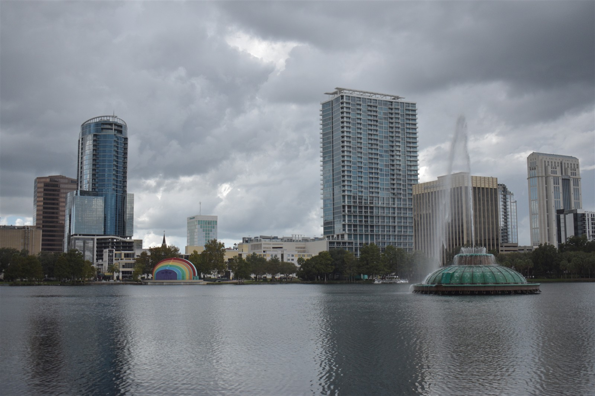
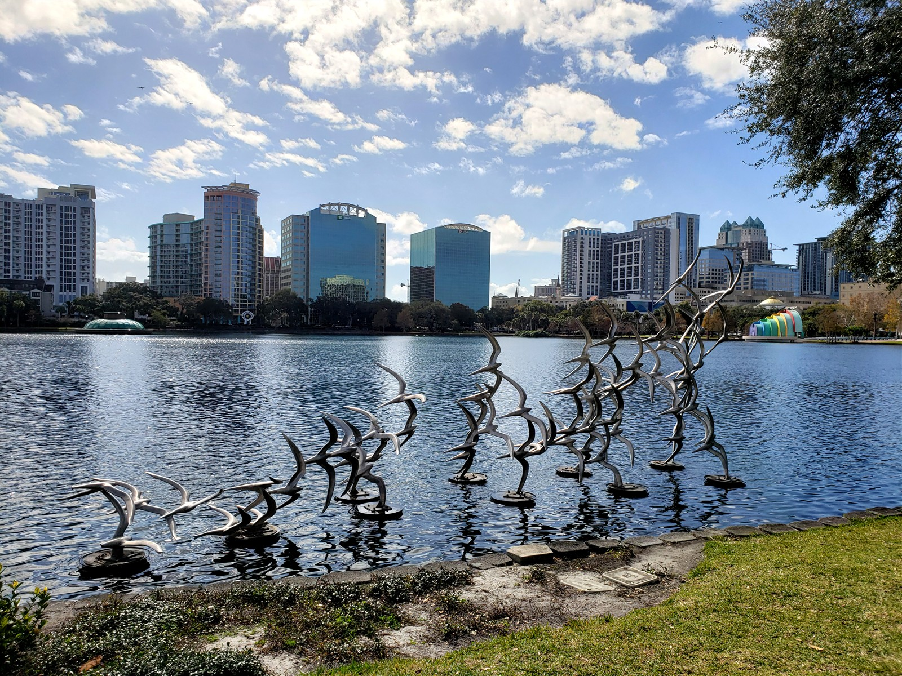

Find events in Orlando
Explore local services, organizations, and activities that help make Orlando feel like home.

Easier to find events
From finding your next opportunity to getting a little extra support, the right place can make all the difference.
We’re bringing useful local starting points together so you can spend less time searching and more time moving forward.
Find your kind of help
Start with what you’re looking for, and commonplace can help you begin.
BROWSE BY
No matches just yet.
Try another search or choose a different category.
Information checked November 10, 2026.

There’s a place for everyone.
Commonplace helps connect Orlando residents with local organizations and opportunities.
Start a conversation.
Orlando’s Office for Local Assistance can help connect residents with local services.